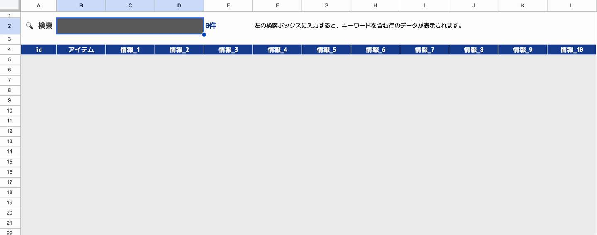

検索付きデータベース

検索機能付きのシンプルなデータベースの雛形です
概要
検索機能付きのシンプルなデータベースの雛形です。
「データをためていきたい」
「データが多くなってきたら、検索機能も欲しい」
という場面で利用できます。
使い方
テストデータとして、都道府県の情報を入れています。(何も入っていないと、検索機能のイメージが伝わりにくいため。)
データを追加する
「データベース」シートの末尾にデータを追加するだけです。
列はL列まで、idを除いて10種類のデータを持たせられるようにしています。
検索する
「検索」シートのB2セル（黒っぽいセル）にキーワードを入れると、結果が表示されます。
検索は部分一致です。
